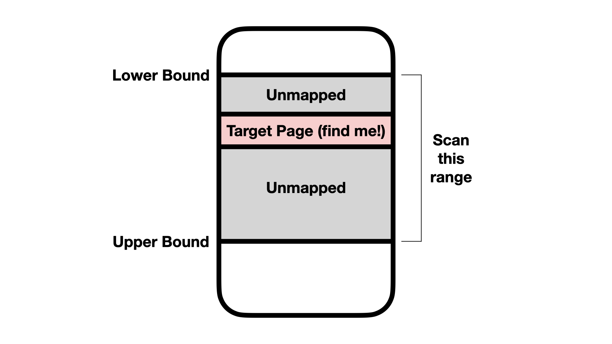
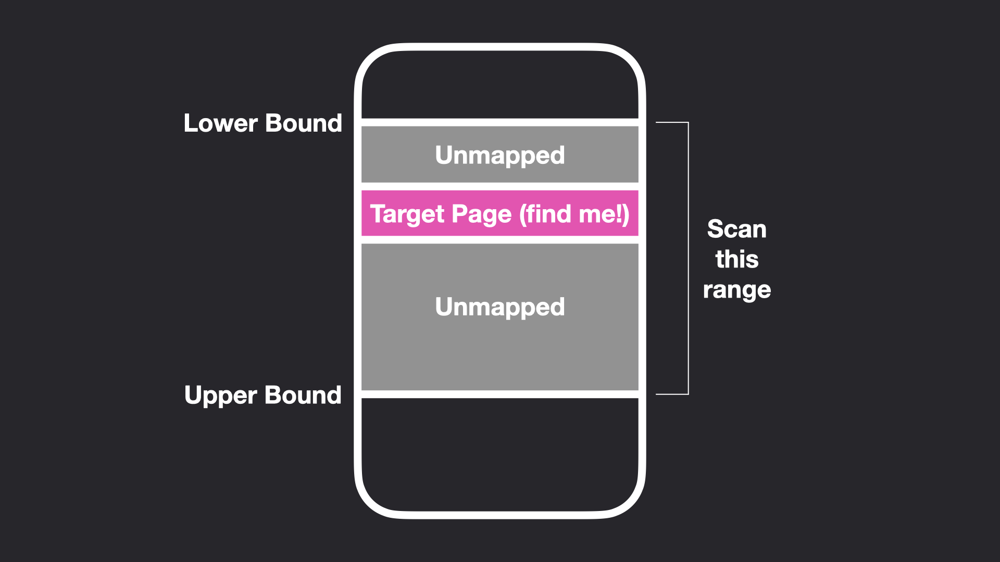

ASLR Bypasses Lab
Due Date: Apr 17; Last Updated Date: Jan 14
Table of contents
- Background
- Part 1: Breaking ASLR
- Part 2: Code Reuse Attacks
- Part 3: Putting it All Together (10%)
- References
Collaboration Policy
Our full Academic Honesty policy can be found on the Course Information page of our website. As a reminder, all 6.5950/6.5951 labs should be completed individually. You may discuss the lab at a high level with a classmate, but you may not work on code together or share any of your code.
Getting Started
This lab will be done on the same machine and user account as the Spectre lab, using one of the arch-sec-[2,4].csail.mit.edu as we have emailed you for the Spectre lab. We will not email you again about this information but feel free to ask TA if you forget it.
We are using git for all the labs – instructions for setting up the git repository can be found on the labs page.
In addition to submitting code, you are required to submit a PDF lab report containing your answers to Discussion Questions to Gradescope. We provide a markdown template in the starter code (report.md).
Background
Long, long ago, programs used to be loaded at constant addresses. Every time you ran a program, every function was located at the exact same virtual address. This made it quite easy for attackers to jump to known locations in program memory as part of their exploits, as they knew that specific functions would be located at specific addresses every time.
Enter Address-Space Layout Randomization, or ASLR. This mitigation randomizes the address of the program at runtime so that attackers can’t simply know the actual addresses of payloads or gadgets. It is now a necessity for most memory corruption exploits to first break the ASLR, meaning the attackers need to know how ASLR maps each constant address to a new random address. We will explore several means of breaking ASLR using, you guessed it, microarchitectural side channels.
Luckily for us attackers, ASLR in Linux is applied not at the byte or word level, but at a page granularity. This means that on our x86_64 machines with 4KB pages, the lower 12 bits of an address will always stay the same (as only the virtual page number changes from run to run).
ASLR is applied as a random constant, let’s call it delta, added to every virtual page number in the program’s address space. People usually use different delta values for different parts of memory. (So the stack gets its own delta, the heap gets its own delta, and the program code gets its own delta).
This means that relative distances within a region are preserved under ASLR – Leaking just one pointer to a given region is typically sufficient to find anything in that region. For example, if my program binary has two methods- MethodA and MethodB, knowing the address of MethodA tells me where to find MethodB. The relative distance between MethodA and MethodB is unchanged under ASLR. As such, attackers only need to find the address for one of these addresses. We declare ASLR defeated if we can leak just a single address.
In this lab, we will explore ASLR from a hardware perspective, and investigate techniques that can be used to reveal the address space layout by creating our own microarchitectural infoleaks.
Lab Codebase
This lab is divided into three distinct modules – parts 1, 2, and 3. The code for each is contained within the part1, part2, and part3 folders respectively.
In Part 1, you will be modifying the files part1A.c, part1B.c, and part1C.c. You should not modify main.c.
In Part 2, you will be modifying part2A.c and part2B.c. The vulnerable method you will be exploiting is defined in main.c. The win and call_me_maybe methods are also defined in main.c. The gadgets to use for your ROP chain are defined in gadgets.s. You should not modify main.c.
In Part 3, you will be modifying part3.c. Just like in Part 2, call_me_maybe and vulnerable are defined in main.c. The gadgets you will be using are in gadgets.o (run make to get it), and are the same as the gadgets in part2/gadgets.s. You should not modify main.c.
For all three parts, you will build the lab by running make. Each subpart is a binary identified simply by the part letter. For example, Part 2 will contain:
a b build gadgets.s main.c Makefile part2A.c part2B.c
a and b are your built programs. (a is your solution for Part 2A and b is your solution for Part 2B). You can run them with ./a or ./b.
In Part 3, the binary is simply called part3, as there is only one subsection for Part 3.
Here’s a list of all files we will consider while grading:
- part1/part1A.c
- part1/part1B.c
- part1/part1C.c
- part2/part2A.c
- part2/part2B.c
- part3/part3.c
You are free to include whatever standard library header files you’d like anywhere in the lab. If you accidentally include something that uses an illegal syscall, you’ll see the seccomp-filter complain (See the section about the ASLR lab jail).
Automated Checking
We provide a check script that can tell you whether your code was correct or not. The script is very similar to the autograder we used in the spectre lab.
Below are the options available with the check utility:
% ./check.py -h
usage: check.py [-h] part
Check your lab code
positional arguments:
part Which part to check? 1a, 1b, 1c, 2a, 2b, or 3?
optional arguments:
-h, --help show this help message and exit
You can check a specific part by specifying the part to check:
% ./check.py 1a
make: Nothing to be done for 'all'.
Checking part 1A...
100%|██████████████████████████████████████████████████████████| 100/100 [00:00<00:00, 500.13it/s]
You passed 100 of 100 runs (100.0%)
Success! Good job
Your score is 20 / 20
You scored 100.0% for this part!
You can also check the entire lab by running ./check.py all. At the end the autograder will tell you your grade. In the above example, we scored 100% for Part 1A.
Jailing
During these exercises, you will be operating inside of a chroot and seccomp-filter jail. This jail will prevent your code from performing most system calls and file accesses, so you can’t simply read /proc/self/pagemap to determine where our mystery page is.
Here’s the system calls that we allow your code to execute:
| Allowed Syscalls in this lab |
write- Write to an already opened file descriptor. |
access- See Part 1A. |
close- Close a file descriptor. |
exit / exit_group - Quit the program. |
fstat- Needed by printf. |
If your code tries to access an illegal syscall, you’ll see the following message:
% ./part1A
zsh: invalid system call ./part1A
You can use strace to trace which system calls your program made.
% strace ./part1A
...
execve(NULL, NULL, NULL) = ?
+++ killed by SIGSYS +++
zsh: invalid system call strace ./part1A
In this example, the program was terminated for trying to use execve.
You should not have to worry about the filter, as it is only there to prevent you from bypassing the lab assignment in a trivial manner, and to increase the immersion of the lab experience.
If you’re curious about how the seccomp filter works, check out setup_jail in main.c of Part 1 or 3 (Part 2 doesn’t use a jail).
Part 1: Breaking ASLR
In this part we will explore three different ways to break ASLR – one simple method operating at the ISA level, and two of them relying on microarchitectural attacks.
In all three parts, you will be tasked with locating a single page of code within a given range. Before your code runs, we will mmap a random page into memory at a random location within this range. Everywhere inside this range except for the single page to find will be unmapped (no entry in the page table). We will then pass the range (the upper bound and the lower bound) to your code. You will scan this range using three different techniques, and return the correct page as the return value of your function. See the figure below.
 
Your code will operate as follows:
// Your code for each exercise in Part 1:
uint64_t find_address(uint64_t low, uint64_t high) {
for (uint64_t addr = low; addr < high; addr += PAGE_SIZE) {
// The implementation of is_the_page_mapped will be
// different for Parts 1A, 1B, and 1C.
if (is_the_page_mapped(addr)) {
return addr;
}
}
return NULL;
}
For now, all you need to do is locate the page. In later parts, we’ll need the location of this page for conducting realistic code reuse attacks in Part 3!
Part 1A: Egghunter (15%)
Egghunters are a technique commonly used in binary exploitation where you have limited code execution and are trying to find a larger payload to execute. For example, you may be able to execute a small (on the order of 64 bytes) amount of code. You have also injected a larger code payload into the program but don’t know where it is located. An “egg hunter” is a small chunk of code that is used to find the larger chunk of code.
In this lab, we will be writing an egg hunter in C to scan for a page in memory. We won’t be looking for a particular value in memory (as most egg hunters do) – we will just look for the mapped page.
You may be wondering what the mechanism for egg hunting actually is. Typically, it is the kernel itself! To see what we mean by this, check out this excerpt from the man page for the access system call:
ERRORS
EACCES The requested access would be denied to the file, or
search permission is denied for one of the directories in
the path prefix of pathname. (See also
path_resolution(7).)
...
EFAULT pathname points outside your accessible address space.
...
The access syscall takes a path name and a mode, and returns whether the file can be accessed by our current process. It has the following declaration:
int access(const char *pathname, int mode);
We provide access a pointer to a string containing the path name, and it will do something with it (what it does, we don’t care). We won’t be using access for its intended purpose – we will use it as an oracle for determining if an address is mapped into our address space.
Notice how access will return the EACCES error if the string points to valid memory (but describes an invalid file), and the EFAULT error if the string we provide doesn’t belong to our address space. We can pass every address in the region to scan to access, and if access returns anything but EFAULT, we know the address is mapped!
Key Idea
If
accessreturnsEFAULT, our argument topathnamewas unmapped.
1-1 Exercise
Implement an egg hunter using the
accesssystem call.
Any error generated by a call to
accessisn’t directly returned by the function itself, see the “Return Value” section of theaccessman-page for more details.
1-2 Discussion Question
Identify one other syscall that could be used for egg hunting.
Any syscall that returns
EFAULTis likely to be useful for egg hunting.Sadly, while this approach works great for userspace, it won’t work on kernel addresses becuase no matter whether a kernel address is mapped or not, your
accessfrom userspace will always say the kernel address cannot be accessed. For that, we need to move to the microarchitectural level. (Parts 1B and 1C are done in userspace, but the techniques have been shown to work on the kernel as well).
Grading
Each attempt (i.e., each run of ./part1/a) should run in 1 second or less and should produce the correct answer 100% of the time. (If it ever gets the answer wrong, you will receive a 0 for this part).
Part 1B: Prefetch Side Channels (40%)
In this part, we will be implementing the Prefetch attack from Prefetch Side-Channel Attacks [1].
The prefetch instruction provides a hint to the hardware prefetcher to load a particular line into the cache. This instruction performs absolutely 0 access control checks. We will use the prefetch instruction to try and load every address into the cache. In particular, we will use the “Translation-Level Oracle” technique (described in their Section 3.2) to locate our hidden page.
The prefetch instruction will try to translate the given virtual address into a physical address and load it into the cache hierarchy. If the address is unmapped, it will require a full page table walk (which takes many cycles!). If the page is already present in the cache hierarchy, prefetch will finish early.
To be more precise, when we use prefetch on an address, if the corresponding page is unmapped, the page table entry has not appearred in any micro-architectural structures. So the processor ends up doing the following operations:
- TLB lookup (miss)
- Page cache lookup (miss)
- Page table walk (traverse the page table tree)
- Find the entry is invalid
- Done
If the page is mapped and if it has been accessed before, the corresponding page table entry could exist in one or multiple of these structures and prefetch will finish much earlier.
By timing how long prefetch takes to run, we can determine whether the given address was mapped or not. If prefetch is slow, that means a full page table walk occurred, and therefore the address was not mapped. If it is fast, that means the address is likely to have already existed in the cache hierarchy, and so is very likely to be our address.
Key Idea
Prefetching a mapped address is faster than prefetching unmapped ones.
Timing the prefetch instruction is a little tricky due to CPU synchronization. We recommend you follow the instruction sequence approach used by the paper authors:
mfence
rdtscp
cpuid
prefetch
cpuid
rdtscp
mfence
While doing this exercise, you may find referring to the source code for the prefetch paper helpful [3]. You can refer to this repo or past lab assignments for how to write inline assembly. Additionally, the GNU manual on inline assembly is quite handy [9].
For causing a prefetch instruction, you can either try the builtin _mm_prefetch(address, _MM_HINT_T2) function, or you can use the following wrapper (taken from the IAIK repo [3]):
void prefetch(void* p)
{
asm volatile ("prefetchnta (%0)" : : "r" (p));
asm volatile ("prefetcht2 (%0)" : : "r" (p));
}
1-3 Exercise
Use the
prefetchinstruction to find the hidden page.
1-4 Discussion Question
Imagine you are the Intel engineer tasked with fixing this problem. How would you approach fixing it?
Grading
Each attempt should run in 5 seconds or less and should produce the correct result 90% of the time or better.
Part 1C: Speculative Probing (5%)
This part is quite difficult, we suggest finishing the other parts before choosing to do this one!
Having access to the prefetch instruction makes things too easy. Additionally, not all architectures have such a convenient instruction for performing attacks. Speculative Probing [2] is a more general technique that has been shown to work on many architectures. We will be implementing a modified version of the Code Region Probing attack described in Section 5.1 of the Speculative Probing paper.
To conduct a speculative probing attack, you will write and exploit your own spectre gadget! Here’s an overview of how it works.
First, you will write your own Spectre gadget (similar to the one you attacked in the spectre lab). Below is pseudocode you can use as a guide for your speculative probing gadget. Write this as a C function in part1C.c.
def speculative_probing_gadget(condition, guess, controlled_memory):
if condition:
# Access 1: Derefence the "guess" address (if it is mapped).
idx = load(guess)
# If guess was not mapped, we will crash here.
# Hopefully all crashes happen under speculation so the program doesn't crash!
# Access 2: Modify some controlled memory at an index dependent on the first load.
# This only happens if the first load didn't crash, since the index is
# a function of the contents of the first load.
controlled_memory[idx] += 1
You’ll notice that this gadget operates on a subtly different mechanism than the Spetre gadgets from the spectre lab. In the spectre lab, the goal was to learn the contents of the “guess” address (reveal the contents of the first load). Here, we don’t actually care about the value of the first load. Instead, we only want to determine whether or not the load was successful.
There are two cases for our guess address: either our current guess is correct, or it isn’t. If we have the right address, we can read freely from it without any issues. However, if it isn’t mapped, reading from it will cause a page fault exception (that we will observe as a segfault). Just one segfault will crash the whole program. So instead, let’s have the crashes run under speculation, and use a side channel to learn whether or not a crash happened.
Key Idea
We suppress exceptions by causing them to happen speculatively, and then afterwords learn whether or not a crash happened using microarchitectural side channels.
After creating the gadget, you will need to control it. You can use the following as a high-level overview of a potential attack:
- Allocate a chunk of memory to use.
- Train the branch predictor for your
speculative_probing_gadget. - Try an address with
speculative_probing_gadget. - Learn whether or not a load occurred with
time_accessto your controlled memory.
There are a few engineering problems to solve here. Notably, the contents of the probed memory could be anything! How do you know what idx’s value was? Is there a way to make our attack access controlled_memory the same way regardless of what idx was?
1-5 Exercise
Use speculative probing to leak the address of the hidden page.
- You completely control the Spectre code, so you can write it any way you like.
- You may find revisiting the Spectre lab document or your Spectre lab code helpful.
- Make sure that both memory accesses happen speculatively so that you don’t crash the program!
- Don’t forget you can
clflushany address you’d like.
Grading
Each attempt should run in 2 minutes or less and should produce the correct result 10% of the time or better.
Part 2: Code Reuse Attacks
In this part, we will explore what the consequences are for breaking ASLR. We will also get some practice constructing realistic code reuse attacks that attackers might use in the real world against vulnerable programs.
We will be exploiting a category of bugs known as buffer overflows. In a buffer overflow, the program reads more information than can fit into a particular buffer, overwriting memory past the end of the buffer.
Buffer Overflows
The most basic form of a buffer overflow is the stack buffer overflow.
/*
* vulnerable
* This method is vulnerable to a buffer overflow
*/
void vulnerable(char *your_string) {
// Allocate 16 bytes on the stack
char stackbuf[0x10];
// Copy the attacker-controlled input into 'stackbuf'
strcpy(stackbuf, your_string);
}
If your_string is larger than 16 bytes, then whatever is on the stack below stackbuf will be overwritten.
So, what’s on the stack?
When a function is called, the return address is pushed to the stack. The return address is the next line of code that will be executed. Let’s take a look at a hypothetical piece of assembly:
0x100: call vulnerable
0x101: nop
Immediately after call vulnerable, the next instruction to execute (in this case, 0x101) will be pushed to the stack. When vulnerable is done, it will execute ret, which will pop the return address off the stack and jump to it.
Let’s look at the disassembly of vulnerable to find out more:
vulnerable:
# rdi contains 'your_string'
# First, setup the stack frame for vulnerable
1 push rbp
2 mov rbp,rsp
# Create some space for stackbuf on the stack
3 sub rsp,0x10
# Put 'your_string' into rsi (argument 2)
4 mov rsi,rdi
# Put 'stackbuf' into rdi (argument 1)
5 lea rax,[rbp-0x10]
6 mov rdi,rax
# Call strcpy(stackbuf, your_string)
7 call strcpy
# Teardown our stack frame
8 mov rsp, rbp
9 pop rbp
# Return from vulnerable (this is basically pop rip)
10 ret
Immediately upon entry to vulnerable (right before line 1), the stack will look like this:
Towards 0x0000000000000000
Stack Growth
/|\
|
|
+---------------+
| 0x101 | <- Return address!
+---------------+
Towards 0xFFFFFFFFFFFFFFFF
Next, the rbp register is pushed, and some more space is made for stackbuf. So, after line 3, the stack will look like this:
Towards 0x0000000000000000
Stack Growth
/|\
|
|
+---------------+
| ????? | <- Space for stackbuf
+---------------+
| Old RBP | <- Saved RBP
+---------------+
| 0x101 | <- Return address!
+---------------+
Towards 0xFFFFFFFFFFFFFFFF
Note that stackbuf sits above the return address on the stack. If we put more information into your_string than can fit into stackbuf, we will continue writing down the stack, and overwrite the return address! That means we can change what happens when vulnerable concludes executing, effectively redirecting control flow in a way we desire!
Of course, in order to actually do this, we will need to know where the code we want to run is located. This is where ASLR bypasses come in handy. By breaking the address randomization of a program, we can reveal where program instructions are located, and jump to them by overwriting return addresses (or any function pointers in a program). You can read Stack Smashing in the 21st Century for more background on buffer overflows.
Part 2A: ret2win (10%)
In this activity we will perform a ret2win attack. In a ret2win attack, the attacker replaces the return address with the address of a win method that, when called, does everything the attacker wants. The attacker does not need to control any arguments passed to win– we only care that win gets executed.
The vulnerable method for this lab operates as follows:
void vulnerable(char *your_string) {
// Allocate 16 bytes on the stack
char stackbuf[16];
// Copy the user input to the stack:
strcpy(stackbuf, your_string);
}
Feel free to read the source code of vulnerable for a bit more info on how the stack works. For now, you can get the win address manually (without needing to use your ASLR bypass techniques developped in Part 1) as follows:
// Cast win to a function pointer and then to a 64 bit int
uint64_t win_address = (uint64_t)&win;
After we run your code, we will print the resulting stack frame to the console so you can see how your attack worked. In this example, I’ve set your_string to 16 A’s ('A' == 0x41) followed by a new line ('\n'). So we see 16 0x41’s repeated on the stack. The newline does not appear as our version of strcpy doesn’t copy the ending new line byte.
This is what the stack looks like now:
+-----------------------------------------+
0x00: | 0x00007FFE055628B0 = 0x4141414141414141 | <- stackbuf starts here
+-----------------------------------------+
0x01: | 0x00007FFE055628B8 = 0x4141414141414141 |
+-----------------------------------------+
0x02: | 0x00007FFE055628C0 = 0x00007FFE05562CE0 | <- Saved RBP
+-----------------------------------------+
0x03: | 0x00007FFE055628C8 = 0x000055FEF9B4E91A | <- Return address!
+-----------------------------------------+
We provide you some sample code to fill in the string you pass to vulnerable. For your convenience, we treat your “string” as an array of 64-bit integers. This way you can directly write to a specific slot on the stack by indexing the provided array. For example, to set the saved RBP position (index 2), you can use your_string[2] = 0x0123456789abcdef.
Note on strcpy: To allow NULL characters into your buffer, we use a different definiton of strcpy than the libc one. Our strcpy allows NULL characters, but stops at newlines (0x0A, or '\n'). This is to mirror the behavior of gets, which is commonly used in CTF stack overflow problems.
Note on rbp: The base pointer rbp is reset upon entry to a C function (see line 2 of the vulnerable disassembly above). So you can set it to whatever you like during your overflow and it won’t make a difference (you will need to overwrite rbp to change the return address).
Exercise 2-1
Overwrite the return address in
vulnerablewith the address ofwin.
Note
It’s ok if your code segfaults on occasion for Part 2A (it doesn’t have to work every time, so long as it works most of the time). This is because sometimes ASLR gives an address that has a new line in it, which means your overflow will stop early.
Part 2B: Return Oriented Programming (ROP) (20%)
In this part, we will perform a return oriented programming attack, or ROP. ROP is a technique devised to counteract Data Execution Prevention (DEP for short, otherwise known as W^X), which is a security feature introduced to protect against simply writing your own code into the stack and jumping to it. DEP and ASLR are the foundation of all modern exploit mitigations. Just like how ASLR can be sidestepped with an information leak, DEP can be defeated by ROP.
The idea behind ROP is to construct a sequence of code by combining tiny “gadgets” together into a larger chain. ROP looks a lot like ret2win, except we add more things to the stack than just overwriting a single return address. Instead, we construct a chain of return addresses that are executed one after the other.
Let’s take a look at two example ROP gadgets:
gadget_1:
pop rdi
ret
gadget_2:
pop rsi
ret
The above sequences of code will pop the top value off the stack into rdi or rsi, and then return to the next address. We can combine them as follows to gain control of rdi and rsi by writing the following to the stack:
+---------------+
| OVERWRITTEN | <- Space for stackbuf
+---------------+
| OVERWRITTEN | <- Saved RBP
+---------------+
| gadget_1 | <- Return address
+---------------+
| New rdi Value |
+---------------+
| gadget_2 |
+---------------+
| New rsi Value |
+---------------+
| Next gadget...|
+---------------+
We can encode desired values for rdi and rsi onto the stack alongside our return addresses. Then, by carefully controlling where code execution goes, we can make the gadgets perform arbitrary computation. In fact, it has been shown that ROP is Turing Complete for sufficiently large programs.
Key Idea
We can chain code sequences together by continuing to overflow the stack.
For this problem, you will need to combine ROP gadgets to cause call_me_maybe to return the flag. You will use the same buffer overflow as we used in Part 2A, and you can get the address of a given gadget the same way we got the address of the win function.
The gadgets are defined in gadgets.s. call_me_maybe is defined below:
void call_me_maybe(uint64_t rdi, uint64_t rsi, uint64_t rdx) {
if ((rdi & 0x02) != 0) {
if (rsi == 2 * rdi) {
if (rdx == 1337) {
printf("MIT{flag_goes_here}\n");
exit(0);
}
}
}
printf("Incorrect arguments!\n");
printf("You did call_me_maybe(0x%lX, 0x%lX, 0x%lX);\n", rdi, rsi, rdx);
exit(-1);
}
Exercise 2-2
Construct a ROP chain to call
call_me_maybewith satisfactory arguments.
Note
It’s ok if your code segfaults on occasion for Part 2B (it doesn’t have to work every time, so long as it works most of the time). This is because sometimes ASLR gives an address that has a new line in it, which means your overflow will stop early.
If you are experiencing crashes and don’t know why, you can use GDB to help figure out where your exploit is going wrong.
Stack Alignment
If your code seems like it should work (the correct arguments are passed to
call_me_maybe, yet your program keeps crashing), it is likely due to a problem called stack alignment. The System V C ABI requires that the stack is 16 byte aligned when entering a function. When we mess about with the stack in a buffer overflow attack, we can sometimes change that alignment. There is a simple solution here- use a singleretgadget to realign the stack to 16 bytes. You can get the address of aretinstruction fromobjdump(use theretinstruction from any of the 6 provided gadgets).
Part 3: Putting it All Together (10%)
We are now going to combine the ASLR bypasses in Part 1 with the ROP chain you wrote in Part 2. The random page from Part 1 will contain the same sequence of ROP gadgets that you had access to in Part 2B. Additionally, it will be marked executable so that it can be executed if you jump to it.
Dumping the gadgets
The hidden page from Part 1 will be filled with the code from the gadgets.o file, which can be generated by running ./check.py 3. Dump the contents of gadgets.o with the following:
objdump -d gadgets.o -M intel
Objdump will report something like the following:
Disassembly of section .text:
0000000000000000 <gadget1>:
0: 5f pop rdi
1: c3 ret
...
0000000000000010 <gadget2>:
10: 5e pop rsi
11: c3 ret
The line 0000000000000000 <gadget1>: tells you the relative distance of gadget1 from the randomized base address. In this case, gadget1 will be located at hidden_page[0x0000] and gadget2 will be at hidden_page[0x0010] (where hidden_page is a uint8_t * that points to the page your Part 1 code found). As ASLR slides everything together by applying a constant offset, gadget2 will always be 0x10 bytes after gadget1, no matter where ASLR places them.
Key Idea
Relative distances between instructions are preserved under ASLR.
Performing the Attack
For Part 3, you will need to reconstruct your ROP chain using the gadgets dumped from objdump. Then, you will combine your code from Part 1 with the reconstructed Part 2 chain to complete a full ROP attack in the hidden page.
Your attack will do the following:
- Locate the hidden
mmappage with your choice of technique from Part 1. - Construct a ROP chain using the gadgets in the hidden page (with offsets calculated from
objdump). - Call
vulnerablewith your payload configured.
Exercise 3-1
Combine your Part 1 and Part 2 attacks to defeat Part 3. On success, you should see the success flag printed to the console.
A note on realism
You may be wondering why we bother with jumping to a sequence of ROP gadgets if we already have control of C code. This is to simulate attacking a real program without the ability to run code within the victim context (for example, attacking the kernel from userspace, or attacking a remote server over a
netcatconnection).
Grading
Commit all the required C file to Github. Check your code from all the parts with the check script and make sure it passes. As always, submit your discussion questions as a PDF to Gradescope.
Contributors
Made by Joseph Ravichandran and Mengjia Yan.
References
[1] Daniel Gruss et al. Prefetch Side-Channel Attacks: Bypassing SMAP and Kernel ASLR. 2016. DOI:https://doi.org/10.1145/2976749.2978356
[2] Enes Göktas et al. Speculative Probing: Hacking Blind in the Spectre Era. 2020. DOI:https://doi.org/10.1145/3372297.3417289
[4] Intel Software Developer’s Manual
[5] Stack Smashing in the 21st Century
[6] Daniel Gruss et al. KASLR is Dead: Long Live KASLR. 2017.
[7] Ben Gras et al. ASLR on the Line: Practical Cache Attacks on the MMU. NDSS (2017).
[8] A. Bittau, A. Belay, A. Mashtizadeh, D. Mazières and D. Boneh, “Hacking Blind,” 2014 IEEE Symposium on Security and Privacy, 2014, pp. 227-242, doi: 10.1109/SP.2014.22.